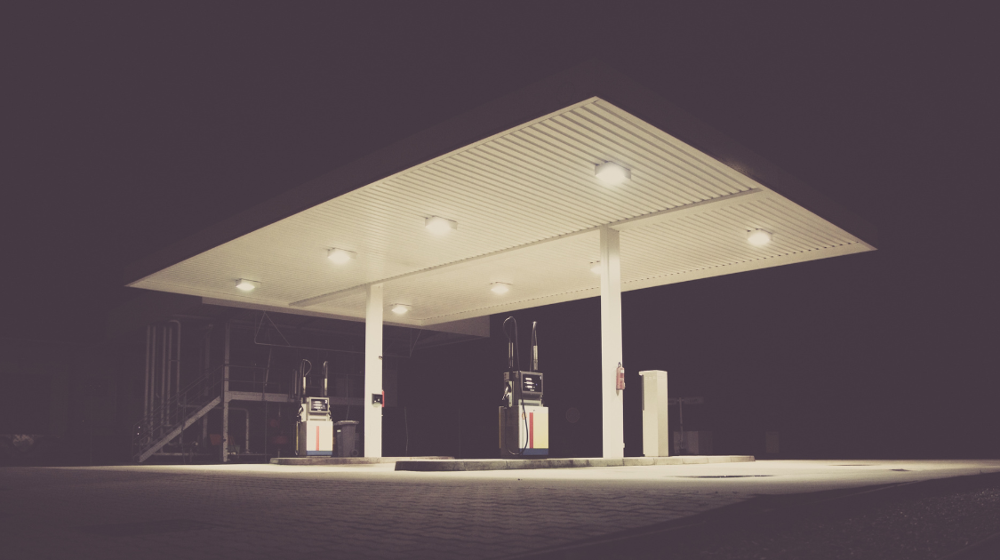

World
Protests in Kazakhstan Over High Fuel Prices and Government Corruption
By Enya Fang | Published Jan 18, 2022 4:38 p.m. PST

What started as initial public anger over increasing fuel prices expanded to nationwide protests for government corruption, living standards, poverty, and unemployment in the former Soviet nation.
On January 5, there were reports of protesters storming the airport in the country's biggest city, Almaty, setting fire to the city's main administration office, and deadly altercations with police and military. The violence continued on the following day; security forces reportedly fired on protesters and explosions were heard close to Republic Square in Almaty.
In a televised address Friday, President Kassym-Jomart Tokayev said that while the situation had been "stabilized" in Almaty, an "anti-terrorist operation continues" throughout the country.
Tokayev proceeded to order security forces to "kill without warning."
As of Wednesday, Kazakh authorities have reportedly detained nearly 1,700 more people accused of participating in last week’s violent unrest. In total, over 12,000 people have been detained and more than 300 criminal investigations have been launched.
Authorities declared a nationwide state of emergency with a curfew and movement restrictions until January 19. In an effort to curb the unrest, Tokayev ordered the government to reduce the price of LPG to 50 tenge ($0.14) per liter. Both Prime Minister Askar Mamin and the Kazakh government resigned, leading to Tokayev taking control of the country's Security Council. These concessions, however, failed to stop the protests.
Though sparked by the government-lifted price controls on liquefied petroleum gas (LPG) at the start of the year, much of the protesters' anger has been directed toward Kazakhstan's autocratic leadership. Before gaining independence in 1991, the country's political scene was dominated by Nursultan Nazarbayev: the longtime president and former Communist Party official who ruled for almost three decades before stepping down in 2019.
Critics accused Nazarbayev’s governance of causing a crackdown on protests, stifling press freedoms, and even appointing family members and allies to government positions. His removal from the council does not seem to have quelled the protests.
Blaming the unrest on foreign-backed “terrorists”, President Tokayev made an appeal for aid to the CSTO, a Russian-led military alliance comprised of former Soviet states. The Collective Security Treaty Organization (CSTO) -- which includes Russia, Belarus, Armenia, Kazakhstan, Kyrgyzstan, and Tajikistan -- sent over 2,000 troops to Kazakhstan. On Tuesday, Tokayev declared their mission accomplished, and starting Thursday, the bloc began the official withdrawal of their troops.